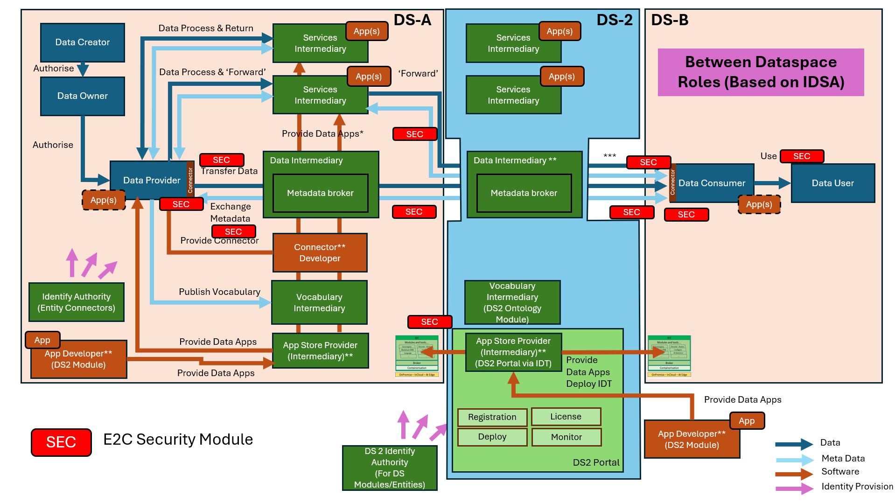
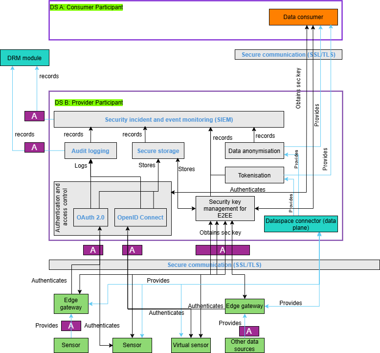

SEC - Edge-to-cloud Security
Powered by
| Project Links |
|---|
| Software GitHub Repository https://github.com/ds2-eu/sec_module.git |
| Progress GitHub Project https://github.com/orgs/ds2-eu/projects/23 |
General Description
Purpose: The DS2 E2C security module (SEC) covers data security, data protection, and privacy with a focus on securing the edge-to-cloud data enablement and ensuring data quality and privacy. This involves implementing secure communication protocols, robust authentication mechanisms, encryption, anonymisation, and continuous monitoring of events in the DS2 ecosystem. The DS2 architecture is designed to handle large volumes of data, facilitating data-driven decision-making while maintaining stringent data security and data privacy standards. The proposed component works in conjunction with all DS2 architecture components.
Description: Data collection and preprocessing (e.g., initial data filtering, noise reduction) often happens at the edge at devices level. Depending on the use case for DS2, an edge gateway can be attached to a data source or sensor for securely transmitting data over a secure channel, using an end-to-end encryption (E2EE) protocol. OAuth 2.0 or OpenID Connect is used for authenticating and access control. The infrastructure provides encrypted data storage and tools for privacy aware data management including anonymisation. SEC manages data encryption, both in transit and at rest. A continuous monitoring of security incidents is performed using a Security Information and Event Management (SIEM) system which allows responding to potential security threats.
Architecture
The figure below represents the module fit into the DS-DS environment.

The figure below represents the actors, internal structure, primary sub-components, primary DS2 module interfaces, and primary other interfaces of the module.

Component Definition
This module has the following sub-components and other functions:
-
Authentication and access control:
- OAuth 2.0: Provides secure authorisation for users and applications accessing the data. OAuth 2.0 allows third-party services to exchange user information securely without exposing user credentials. This module will be used as is and upon successful authentication, it will return an access token. More specifically, SEC will utilise OAuth 2.0 with Client Credentials Grant since the clients (i.e., sensors, gateways) will use it to obtain an access token outside the context of a (human) user.
-
Audit logging: Every authentication request and subsequent (successful and unsuccessful) authentication access are logged. Audit logs are monitored to detect and respond to block unauthorised access attempts. The log information is stored in the Blockchain of DS2 DRM module.
-
Secure storage: This stores authentication tokens with access control information. Data stored in the storage is encrypted. Note it does not store sensor data.
-
Security information and event management (SIEM): It is a sub-component that aggregates logs and event data generated by all users, servers, edge devices, and firewalls participating in the DS2 infrastructure to monitor and analyse events for security-related incidents detection and response. Like the audit logs, SIEM also stores the incoming log and event data to the DS2 DRM module. This additional logging in blockchain is optional.
-
Secure communication: It establishes and maintains a secure communication channel using secure virtual private cloud (VPC) peering (when communicating among cloud servers) and/or a VPN. All data in transit are protected using SSL/TLS. This module exists in Digiotouch’s cloud based Paradise platform and Digiotouch Edge (which is an Edge Computing platform) and will be used as is in this module.
-
Tokenisation: Replaces sensitive data elements with a non-sensitive equivalent, known as a token, which can be mapped back to the original data. This process helps protect sensitive information by ensuring that tokens, rather than actual data, are used during transactions or storage.
-
Data anonymisation: This optional sub-component provides the following functions:
- Differential privacy: Techniques such as differential privacy add noise to data in a way that statistical properties of the data set are preserved while individual data points are obfuscated. This protects user privacy when data is shared or analysed.
- Generalisation and suppression: These techniques modify or remove specific data points to reduce the risk of identifying individuals in a dataset.
-
Security key management for E2EE: This covers the lifecycle of operations which are needed to ensure the security keys (e.g., AES) are created, stored, used, rotated, and destroyed securely. A key management system (KMS) is employed in this sub-component and encrypted keys are stored in the above-mentioned secure storage. These security keys are used for end-to-end data encryption.
-
Sensor: This acts as a data source (e.g., IoT sensor, camera etc.) in the DS2 ecosystem. It is assumed that some sensors are capable of performing authentication, data encryption, and interaction with web services on its own while some sensors do not have such capabilities and are assisted by an Edge gateway.
-
Virtual sensor: It is a software component that mimics the data behaviour of a real sensor. Synthetic data is an output of a virtual sensor.
-
Other data sources: They include public or private repositories of data that are useful for the use case applications. For example, weather data from a region which is available in a public repository.
-
Edge gateway: It is a device which assists sensors with limited processing power with authentication, data encryption, secure data communication etc.
-
Dataspace connector: Enables encrypted data communication through it.
-
Data consumer: It belongs to the consumer participant which consumes encrypted and/or anonymised data coming from the provider participant.
Screenshots
This module does not have an user interface.
Commercial Information
Table with the organisation, license nature (Open Source, Commercial ... ) and the license. Replace with the values of your module.
| Organisation (s) | License Nature | License |
|---|---|---|
| DIGI | Open Source | Apache 2.0 |
Top Features
- Authentication & Access Control: Utilizing OAuth 2.0, the module handles secure authentication for users, devices (e.g., sensors, edge gateways), and applications. It issues access tokens to enforce role-based access control (RBAC), allowing only authorized entities to access or manipulate data.
- Data Anonymisation & Tokenisation: It includes optional data anonymisation and suppression techniques to protect sensitive data. It also provides tokenisation, replacing sensitive data with reversible, non-sensitive equivalents for secure processing.
- Audit Logging and Blockchain Integration: Every authentication and access event is logged in a blockchain ledger (via the DS2 DRM module) to ensure tamper-proof tracking of access history, enhancing traceability and trust.
- Security Information and Event Management (SIEM): It continuously monitors the DS2 infrastructure for security incidents. It aggregates event logs from devices, servers, and services, enabling real-time threat detection and incident response. This module is work in progress
How To Install
Requirements
Provision a Linux VM (Ubuntu 22.04 LTS or later) with 4vCPUs and 8GB RAM. The technical requirements might augment as the MCL module nears completion.
Software
Docker environment is necessary to run the SEC module.
Summary of installation steps
- clone the github repo
- run the docker compose file
Detailed steps
-
Clone the repository
-
Run the docker compose file
How To Use
This guide provides comprehensive instructions on how to run and use the SEC module web services.
Prerequisites
- Docker and Docker Compose installed on your system
- SSL certificates in the
ssldirectory: digiotouch_cloud.crt--> replace with your ssl certificatedigiotouchcloud.key--> replace with your private key- Environment variables set up (if needed):
OIDC_CLIENT_IDOIDC_CLIENT_SECRET
Deployment details
The SEC module consists of four main services (as of now): 1. OAuth2 Server (Port 443) 2. OpenID Connect Server (Port 442) 3. Tokenization Service (Port 444) 4. MongoDB Database (Internal)
Step-by-Step Setup and Usage
1. Initial Setup
# Clone the repository
git clone https://github.com/ds2-eu/sec_module.git
cd sec_module
# Ensure SSL certificates are in place
# Place your SSL certificates in the ssl directory:
# - ssl/digiotouch_cloud.crt
# - ssl/digiotouchcloud.key
2. Starting the Services
3. Service Health Checks
All services have health check endpoints that can be accessed:
- OAuth2 Server: https://localhost:443/health
- OpenID Connect: https://localhost:442/health
- Tokenization: https://localhost:444/health
4. Service Endpoints and Usage
OAuth2 Server (Port 443)
- Base URL:
https://localhost:443(Change localhost to your FQDN) - Main endpoints:
/oauth2/authorize- Authorization endpoint/oauth2/token- Token endpoint/oauth2/userinfo- User info endpoint
OpenID Connect Server (Port 442)
- Base URL:
https://localhost:442 - Main endpoints:
/oidc- OpenID Connect issuer/oidc/.well-known/openid-configuration- OpenID configuration/oidc/userinfo- User info endpoint
Tokenization Service (Port 444)
- Base URL:
https://localhost:444 - Provides tokenization services for sensitive data
5. Service Management
Viewing Logs
# View logs for all services
docker-compose logs
# View logs for specific service
docker-compose logs oauth-server
docker-compose logs openid_connect
docker-compose logs tokenization
Stopping Services
6. Security Considerations
- All services use HTTPS with SSL certificates
- Services are configured to restart automatically unless explicitly stopped
- MongoDB data is persisted in a Docker volume
- Services are isolated in a dedicated Docker network (
app_network)
7. Troubleshooting
-
Check service health:
-
View service logs for errors:
-
Common issues:
- SSL certificate issues: Ensure certificates are properly placed in the
ssldirectory - Port conflicts: Ensure ports 442, 443, and 444 are available
- MongoDB connection: Check if MongoDB container is running properly
8. Development
For development purposes, you can modify the environment variables in the docker-compose.yml file or use a .env file for sensitive information.
Important Notes
- All services are configured to run in production mode (
NODE_ENV=production) - Services use MongoDB for data persistence
- All services are configured with automatic restart policies
- Health checks are configured to run every 30 seconds
- Services are configured with SSL/TLS for secure communication
- More services and features are being added to the SEC module.
Other Information
No other information at the moment for SEC.
OpenAPI Specification
To be done.
Additional Links
To be done.